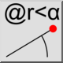
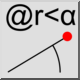
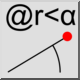
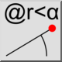

Position polaire relative
Barre d'outils / Icône :
 

Menu : Infos > Position polaire relative
Raccourci : I, T
Commandes : infopospolrel | it
Il s'agit d'une traduction automatique.
Barre d'outils / Icône :
 

Menu : Infos > Position polaire relative
Raccourci : I, T
Commandes : infopospolrel | it
Cet outil affiche les coordonnées polaires relatives des points choisis dans le dessin.